Your Saloon and Stadium moves, tried on the other eight venues: a patron into Sal's or a mug's palette, the show into a patron's, two patrons into one. Color only; the DMG keeps its palettes.
2026-10-25 · main e600bb1
Free OBJ palettes for new looks
Venue
Today
Recommended
Optional
Lumber Lodge
1
+1
+1
Bistro
1
+3
–
Igloo
1
–
+1
Robot Factory
1
–
–
Chrome Cow
1
+1
–
Teahouse
1
+1
–
Jungle Zoo
1
+1
–
Space Lounge
1
+2
–
Each venue has 3 looks now. Today's free palette is OBJ 4 (at the Robot Factory, once BOXY's enhanced look is dropped). In the playfield BG 5, 6 and 7 are free, so the BG side has room for 6 looks.
BistroRecommended
PIERRE, BRIE and the waiter into Sal's palette
Frees OBJ 3, 5, 6 · BG 3
Before
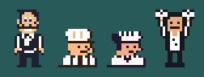
OBJ 0OBJ 3OBJ 6OBJ 5
After
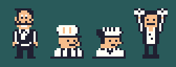
Shared
Like NORM at the Stadium. Their palettes are already almost Sal's.
PIERRE and BRIE walk in one BG palette in Sal's colours.
BRIE's skin gets a shade lighter.
TeahouseRecommended
Taiko drummer shares SAKURA's palette
Frees OBJ 5
Before
OBJ 5OBJ 6
After
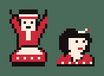
Shared
Like the Saloon dancers. Same red and outline; the cream and white meet in the middle.
Chrome CowRecommended
The band shares BANDIT's palette
Frees OBJ 5
Before
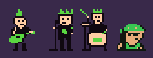
OBJ 5OBJ 6
After
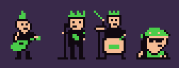
Shared
Both are skin, green and near-black already.
Lumber LodgeRecommended
Sasquatch shares the full mug's palette
Frees OBJ 5
Before
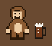
OBJ 5OBJ 1
After
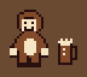
Shared
Like the Saloon: the foam goes cream, the beer a touch lighter.
The fill glass, breaking glass and sparkle use the same palette.
Space LoungeRecommended
XENO shares the empty mug's palette
Frees OBJ 6
Before
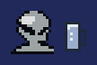
OBJ 6OBJ 2
After
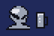
Shared
Like OBJ 2 at the Stadium. Both are greys already.
He still walks in his own BG palette.
Check: the Space boss also uses OBJ 2.
Jungle ZooRecommended
COCO shares the full mug's palette
Frees OBJ 3
Before
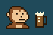
OBJ 3OBJ 1
After
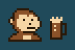
Shared
Like PETE at the Stadium. Same brown and outline; the foam goes tan.
He still walks in his own BG palette.
Space LoungeRecommended
ZORP shares the full mug's palette
Frees OBJ 3
Before
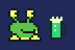
OBJ 3OBJ 1
After
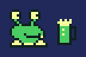
Shared
Same green family. ZORP gets a little paler, the drink a little yellower.
He still walks in his own BG palette.
Lumber LodgeOptional
CEDAR and WILLOW share one palette
Frees OBJ 6 · BG 3
Before
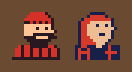
OBJ 3OBJ 6
After
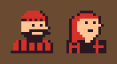
Shared
Like DUSTY and EMMA. Same skin and red.
WILLOW loses her navy: her dress turns near-black.
IglooOptional
Penguin into Sal's palette
Frees OBJ 5
Before
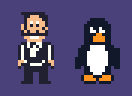
OBJ 0OBJ 5
After
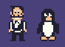
Shared
White and navy match. The orange beak and feet turn peach.
Looked at, not recommended
Igloo IGGY and POLLY: the two parkas become the same blue.
Robot Factory The dancing robot and the full mug: the robot turns lime green. Dropping BOXY's enhanced look already frees OBJ 4 there.
Teahouse RONIN with SAKURA: his face turns white.
Chrome Cow The full and empty mugs hold the same three colours in a different order. Sharing would need the mug art redrawn.